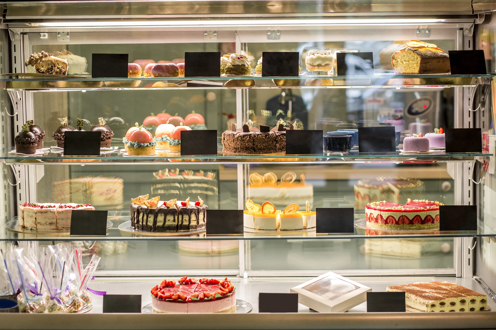

Sobre Nosotros
Pastelería Mil Sabores celebra su 50° aniversario como un referente en la repostería chilena. Somos famosos por nuestra participación en el récord Guinness de 1995, cuando colaboramos en la creación de la torta más grande del mundo. Hoy renovamos nuestra tienda online para ofrecer una experiencia de compra moderna y accesible a todos nuestros clientes.
Nuestra Misión
Ofrecer una experiencia dulce y memorable a nuestros clientes, proporcionando tortas y productos de repostería de alta calidad para todas las ocasiones, mientras celebramos nuestras raíces históricas y fomentamos la creatividad en la repostería.

Nuestra Visión
Convertirnos en la tienda online líder de productos de repostería en Chile, conocida por nuestra innovación, calidad y el impacto positivo en la comunidad, especialmente en la formación de nuevos talentos en gastronomía.
Nuestro Equipo
Este sitio fue desarrollado por el equipo [nombres de los integrantes], estudiantes de Desarrollo Full Stack II en Duoc UC, como parte de la Evaluación Parcial N°1 de la asignatura DSY1104.